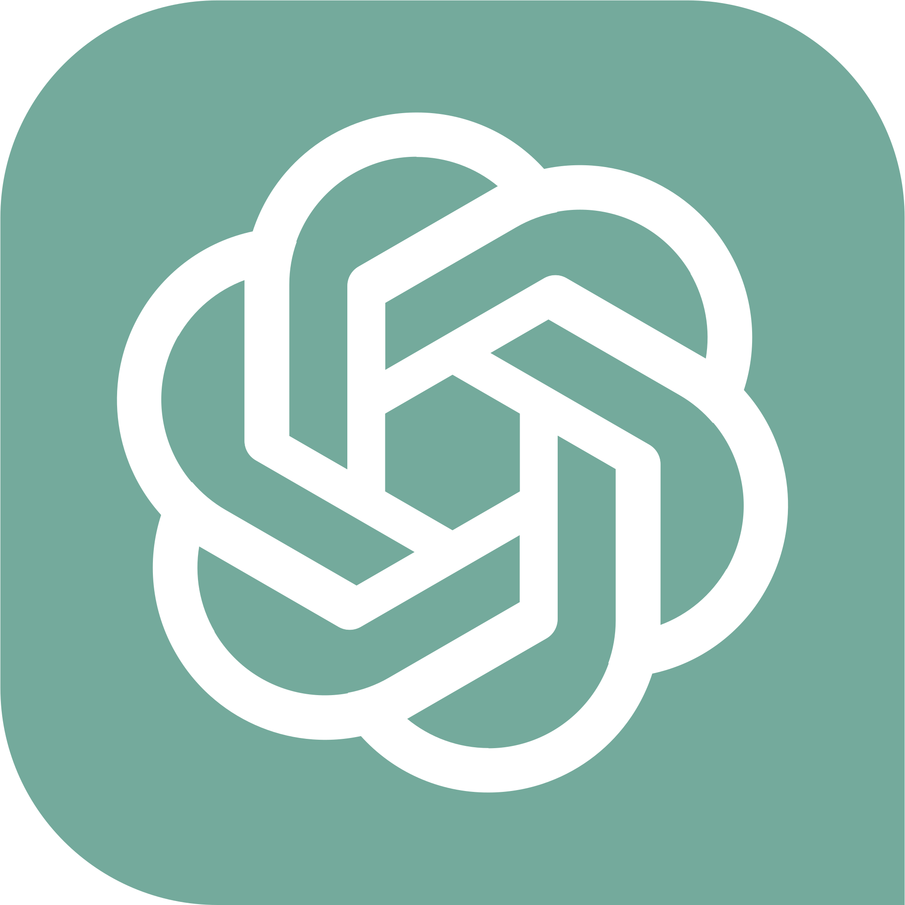

SIRUS / APARÊNCIAO tema define a cor.
Testar interação ↓O tema define a cor.
O vidro define o material.
Dark e Light, com translucidez opcional. O mesmo padrão em menus, popovers, tooltips e diálogos.
Dark · Sólido
Aparência e atalhos● Pronto

GPT-6.1-Sol · concluiuOs elementos flutuantes seguem a mesma linguagem da janela. O texto, os ícones e as ações continuam nítidos em qualquer material.
Aparência e atalhos agora
▱ sirus
⑂ main
Codex · GPT-6.1-Sol
Configurações ⌘,
Clique em Provedor para testar o dropdown.
O que vamos construir?
Prévia visual: o desktop atrás do vidro é simulado. O tema e a translucidez podem ser escolhidos separadamente.